On clicking the track editor tab button at the top of the screen you are presented with the following user interface:
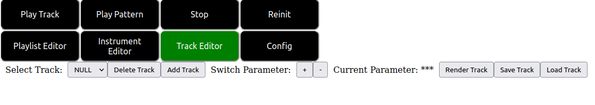
From left to right we describe the controls shown in this image:
Csound score code for a particular instrument can be thought of as an array of strings, each string containing a fixed number of ascii words (parameters) separated by spaces corresponding to the parameters of the instrument. Each string in the array makes up a single note/event in the score. Textually this looks much like a spreadsheet of values.
In SeaSound tracks are made for individual instruments. Each track contains one gui canvas per parameter of the instrument specified. The various canvases can provide different styles of graphical input for each of the different parameters of the instrument. The user switches between these parameter canvases and inputs note events to them via the mouse and keyboard graphically. These tracks can then be translated down to csound score code.
Note that in particular we designate the first/zeroth parameter canvas in the array of parameters as the “trigger-mode” canvas. What this means is that this canvas in particular is used for the inputing and deletion of actual note/event start times and durations. The other parameters in the array are update to reflect the start times and durations input via this widget and can only have the values contained within them changed, but new notes cannot be added to them or deleted from them.
To create a track in a SeaSound project you must press the “AddTrack” button described above. Doing so results in the following dialog popping up.
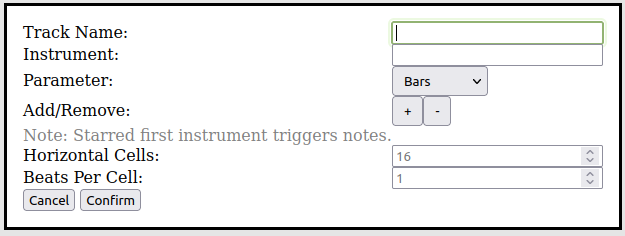
The text fields of this dialog are as follows:
Warning: If you supply too little parameters for your chosen instrument to the track you have selected or too many the result will be whatever the csound backend chooses to do when toof few/too many parameters are supplied to an instrument. This may result in errors or code that does not work as you expected. It is important to get the number of parameters in the track menu for your instrument correct.
A filled in track dialog example is shown below.
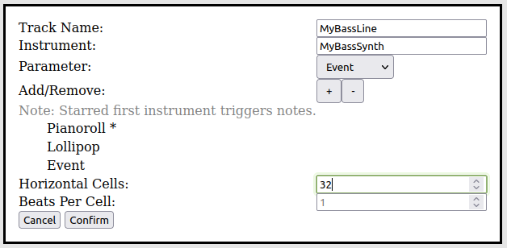
As of right now there are four different types of parameter canvases, pianoroll, lollipop, bars and coded event canvases. We explain the trigger mode behavior of each in the following subsections.
Pianoroll canvases look like the following:
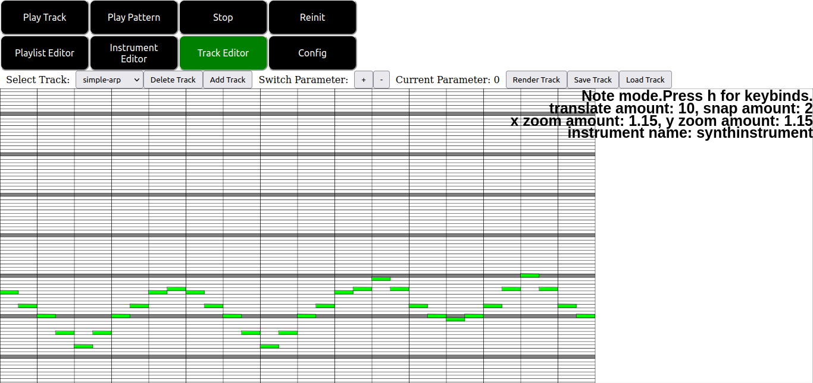
Pianoroll canvases are used primarily for inputting frequencies and durations with respect to time as in most modern DAWS. Note in the screenshot in particular the status info in the upper right corner of the screen. By pressing h with the pianoroll canvas focused we can bring up a quickreference menu showing the pianoroll keybinds.
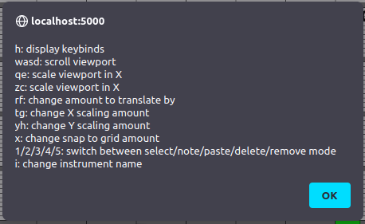
The keybinds are as follows:
As mentioned above the pianoroll canvas is a modal canvas, much like graph instrument canvases. The modes of the pianoroll canvas are as follows:
Note that alignment of notes does not need to occur at cell boundaries. For example if you wanted to align notes to thirds of a cell using the x key mentioned above and entering 3 into the popup menu that results will cause notes to be snapped to thirds of cell boundaries.
Lollipop canvases look like the following:
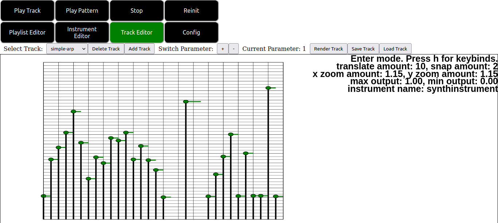
Lollipop canvases allow numerical values to be specified with respect to time and relative to some particular configurable maximum and minimum values. Note again in the screenshot in particular the status info in the upper right corner of the screen. By pressing h with the lollipop canvas focused we can bring up a quickreference menu showing the canvases keybinds.
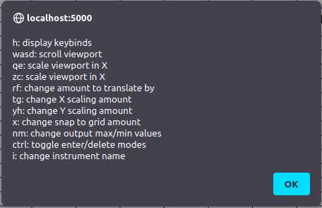
The keybinds are as follows
Note: In fact you aren’t restricted to the boundaries drawn on the canvas. You can draw lollipop sliders above or below these boundaries or to the left or right of them. But such behavior with respect to my code should be considered undefined.
The modes of the lollipop canvas themself are much simpler than the pianoroll canvas. There are only two modes. Enter and delete mode. Enter mode allows for individual lollipops to be placed on the screen via mouseclicking similar to pianoroll note mode. Pressing control places the canvas into delete mode. In delete mode clicking on a lollipop deletes it and sets the canvas back to note mode for further input.
The bars canvas type is simply a variation on the lollipop canvas where the lollipops are drawn as rectangles rather than lollipops hence everything stated above for the lollipop canvas applies equally to the bars canvas type. An example of the bars canvas is shown in the figure below.
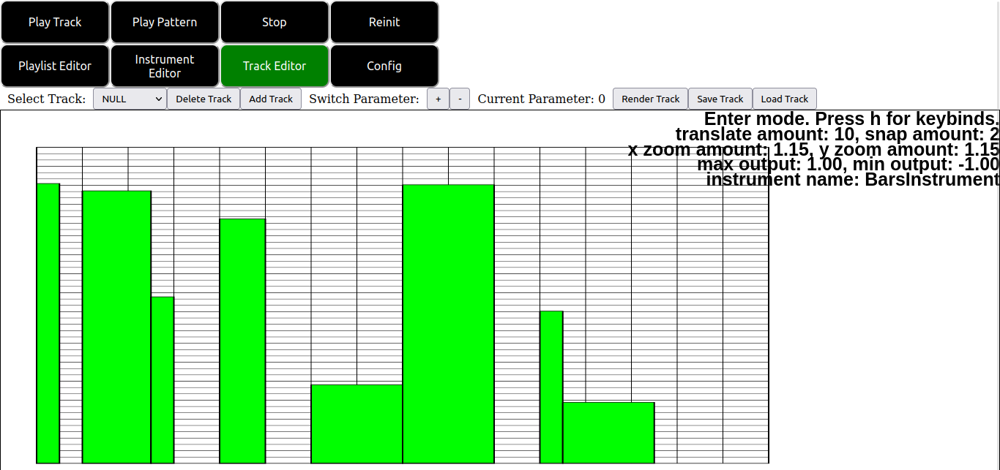
Coded event canvases look like the following:
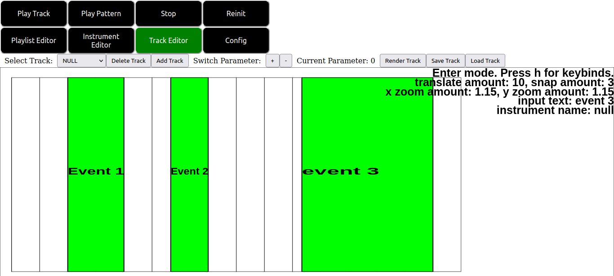
The coded event canvas allows textual events to be specified with respect to time. This allows for more flexibility than the pianoroll or lollipop canvases at the expense of ease of use. Note again in the screenshot in particular the status info in the upper right corner of the screen. By pressing h with the coded event canvas focused we can bring up a quickreference menu showing canvases keybinds.
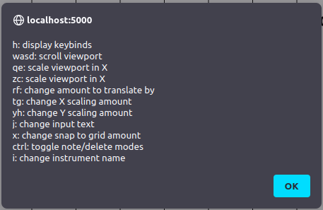
Again the keybinds are nearly the exact same as the pianoroll and lollipop canvases. The new exception being that now there is a key j which pops up a menu for inputing the desired event to text to emit/display on mouse clicks.
As an exercise we will create a simple track as follows:
First click the “Add Track” button and enter the following inputs into the popup menu.
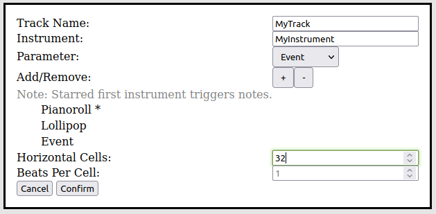
This creates a track with a pianoroll, lollipop and coded event canvas. Since the first parameter in the list is the pianoroll canvas that will be our trigger mode canvas and the rest of the canvases will be in nontrigger mode.
Next click the confirm button and verify an empty pianoroll canvas appears on your screen. Note that the select track dropdown is not updated automatically. You should go ahead and select your new track now. If you edit other tracks and would like to return this one later you may reselect it by name using the select track dropdown again.
Now enter the following notes (or any other note pattern you like) into the piano roll.
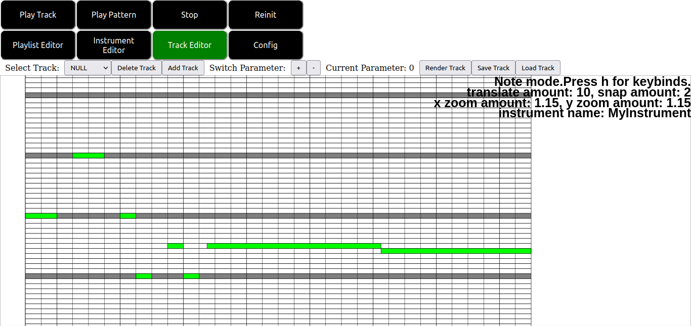
Now verify that corresponding values are entered automatically to your other parameters by scrolling through them using the +/- buttons at the top of the gui. In particular notice that clicking on events opens the pop up menu to input their event text and that clicking on lollipop sliders allows you to adjust their height.
Note also that scrolling, scaling and so on are synced between the parameters. If you scroll in one the rest are scrolled too and likewise if you scale one, the rest are also scaled.